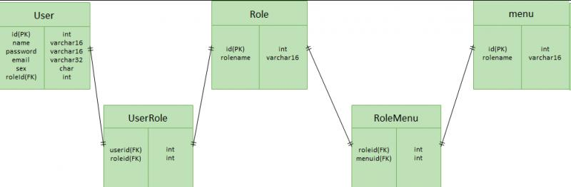
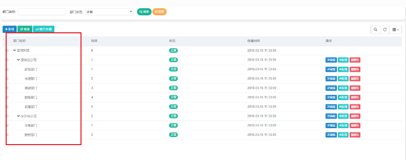
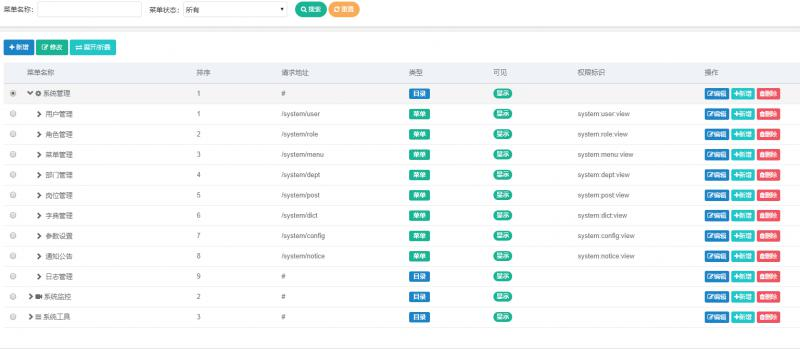
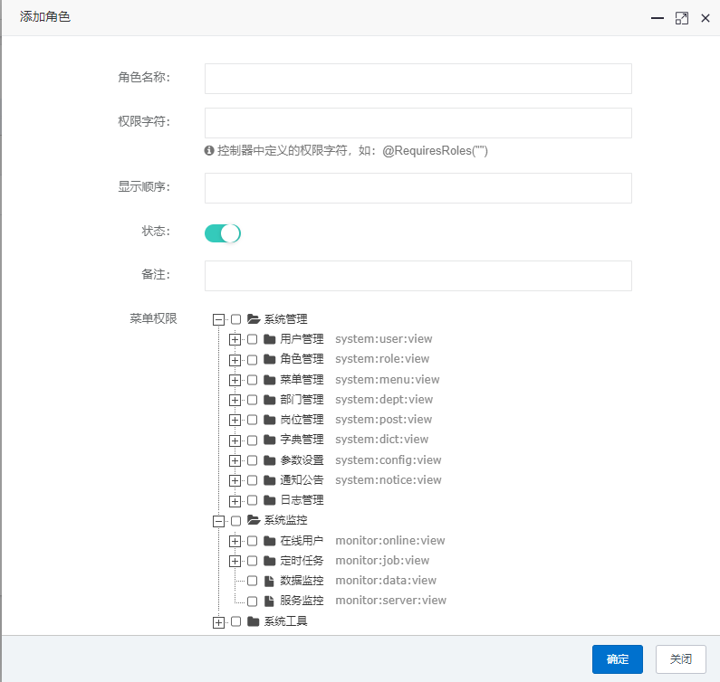
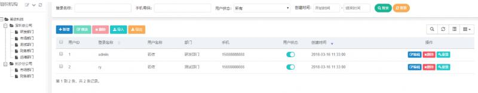

在本号之前的文章中，已经为大家介绍了很多关于Spring Security的使用方法，也介绍了RBAC的基于角色权限控制模型。但是很多朋友虽然已经理解了RBAC控制模型，但是仍有很多的问题阻碍他们进一步开发。比如：
那么本文就希望将这些问题，与大家进行一下分享。

上图中：
本文讲解只将权限控制到菜单的访问级别，即控制页面的访问权限。如果想控制到页面中按钮级别的访问，可以参考Menu与RoleMenu的模式同样的实现方式。或者干脆在menu表里面加上一个字段区别该条记录是菜单项还是按钮。
为了有理有据，我们参考一个比较优秀的开源项目：若依后台管理系统。

之所以先将部门管理提出来讲一下，是因为部门管理没有在我们上面的RBAC权限模型中进行提现。但是部门这样一个实体仍然是，后端管理系统的一个重要组成部分。通常有如下的需求：
以下SQL以MySQL为例:
CREATE TABLE `sys_org` (
`id` INT(11) NOT NULL AUTO_INCREMENT,
`org_pid` INT(11) NOT NULL COMMENT '上级组织编码',
`org_pids` VARCHAR(64) NOT NULL COMMENT '所有的父节点id',
`is_leaf` TINYINT(4) NOT NULL COMMENT '0:不是叶子节点，1:是叶子节点',
`org_name` VARCHAR(32) NOT NULL COMMENT '组织名',
`address` VARCHAR(64) NULL DEFAULT NULL COMMENT '地址',
`phone` VARCHAR(13) NULL DEFAULT NULL COMMENT '电话',
`email` VARCHAR(32) NULL DEFAULT NULL COMMENT '邮件',
`sort` TINYINT(4) NULL DEFAULT NULL COMMENT '排序',
`level` TINYINT(4) NOT NULL COMMENT '组织层级',
`status` TINYINT(4) NOT NULL COMMENT '0:启用,1:禁用',
PRIMARY KEY (`id`)
)
COMMENT='系统组织结构表'
COLLATE='utf8_general_ci'
ENGINE=InnoDB
;注意：mysql没有oracle中的start with connect by的树形数据汇总SQL。所以通常需要为了方便管理组织之间的上下级树形关系，需要加上一些特殊字段，如：org_pids：该组织所有上级组织id逗号分隔，即包括上级的上级；is_leaf是否是叶子结点；level组织所属的层级(1,2,3)。

CREATE TABLE `sys_menu` (
`id` INT(11) NOT NULL AUTO_INCREMENT,
`menu_pid` INT(11) NOT NULL COMMENT '父菜单ID',
`menu_pids` VARCHAR(64) NOT NULL COMMENT '当前菜单所有父菜单',
`is_leaf` TINYINT(4) NOT NULL COMMENT '0:不是叶子节点，1:是叶子节点',
`name` VARCHAR(16) NOT NULL COMMENT '菜单名称',
`url` VARCHAR(64) NOT NULL COMMENT '跳转URL',
`icon` VARCHAR(45) NULL DEFAULT NULL,
`icon_color` VARCHAR(16) NULL DEFAULT NULL,
`sort` TINYINT(4) NULL DEFAULT NULL COMMENT '排序',
`level` TINYINT(4) NOT NULL COMMENT '菜单层级',
`status` TINYINT(4) NOT NULL COMMENT '0:启用,1:禁用',
PRIMARY KEY (`id`)
)
COMMENT='系统菜单表'
COLLATE='utf8_general_ci'
ENGINE=InnoDB
;
上图为角色修改及分配权限的页面
CREATE TABLE `sys_role` (
`id` INT(11) NOT NULL AUTO_INCREMENT,
`role_id` VARCHAR(16) NOT NULL COMMENT '角色ID',
`role_name` VARCHAR(16) NOT NULL COMMENT '角色名',
`role_flag` VARCHAR(64) NULL DEFAULT NULL COMMENT '角色标识',
`sort` INT(11) NULL DEFAULT NULL COMMENT '排序',
PRIMARY KEY (`id`)
)
COMMENT='系统角色表'
COLLATE='utf8_general_ci'
ENGINE=InnoDB
;CREATE TABLE `sys_role_menu` (
`id` INT(11) NOT NULL AUTO_INCREMENT,
`role_id` VARCHAR(16) NOT NULL COMMENT '角色ID',
`menu_id` INT(11) NOT NULL COMMENT '菜单ID',
PRIMARY KEY (`id`)
)
COMMENT='角色菜单多对多关联表'
COLLATE='utf8_general_ci'
ENGINE=InnoDB
;
CREATE TABLE `sys_user` (
`id` INT(11) NOT NULL AUTO_INCREMENT,
`org_id` INT(11) NOT NULL,
`username` VARCHAR(64) NULL DEFAULT NULL COMMENT '用户名',
`password` VARCHAR(64) NULL DEFAULT NULL COMMENT '密码',
`enabled` INT(11) NULL DEFAULT '1' COMMENT '用户账户是否可用',
`locked` INT(11) NULL DEFAULT '0' COMMENT '用户账户是否被锁定',
`lockrelease_time` TIMESTAMP NULL '用户账户锁定到期时间',
`expired_time` TIMESTAMP NULL '用户账户过期时间',
`create_time` TIMESTAMP NULL DEFAULT CURRENT_TIMESTAMP ON UPDATE CURRENT_TIMESTAMP COMMENT '用户账户创建时间',
PRIMARY KEY (`id`)
)
COMMENT='用户信息表'
ENGINE=InnoDB
;CREATE TABLE `sys_user_role` (
`id` INT(11) NOT NULL AUTO_INCREMENT,
`role_id` VARCHAR(16) NULL DEFAULT NULL,
`user_id` VARCHAR(18) NULL DEFAULT NULL,
PRIMARY KEY (`id`)
)
COLLATE='utf8_general_ci'
ENGINE=InnoDB
;在用户的信息表中，体现了一些隐藏的需求。如：多次登录锁定与锁定到期时间的关系。账号有效期的设定规则等。
当然用户表中，根据业务的不同还可能加更多的信息，比如：用户头像等等。但是通常在比较大型的业务系统开发中，业务模块中使用的用户表和在权限管理模块使用的用户表通常不是一个，而是根据某些唯一字段弱关联，分开存放。这样做的好处在于：经常发生变化的业务需求，不会去影响不经常变化的权限模型。